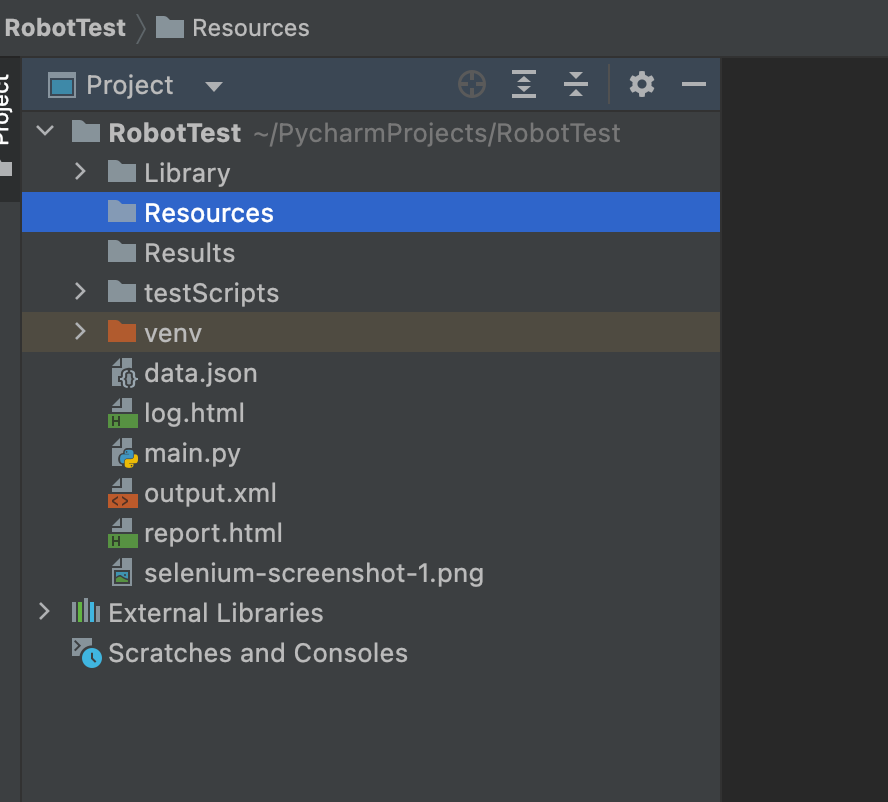
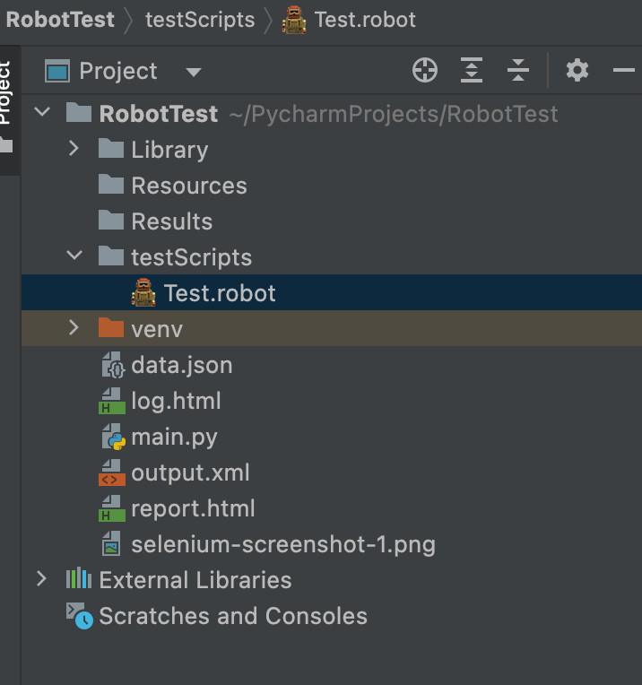
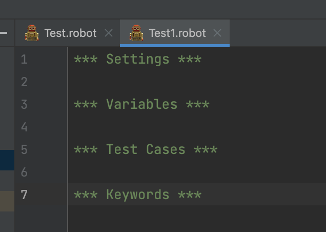
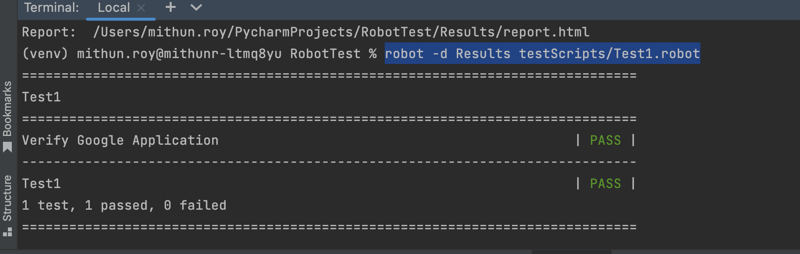
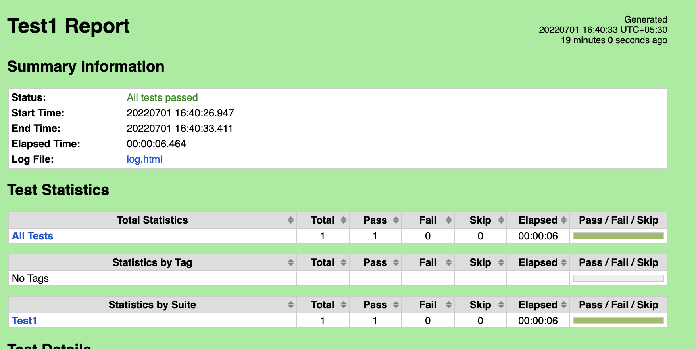

FOLDER STRUCTURE FOR ROBOT FRAMEWORK
In below article, we will see folder structure for Robot Framework.
Actually, you need to create 4 folders:
1. Library – This folder is required for storing the custom libraries.
2. Resources – Resources folder is used to write reusable codes.
It would be mostly used for implementing our Page Object model.
3. Results – For saving the Test execution logs and results.
4. Scripts – To write our Robot Tests.

WRITING YOUR FIRST TEST IN ROBOT FRAMEWORK
1. Step 1: – Create a file under "testScripts" folder with .robot extension as Test.robot. The .robot files are considered as Test Suites by Robot Framework.

Step 2: Usually a robot file is having 4 sections.
*** Settings *** – This section Used for Importing test libraries, resource files and variable files.
*** Variables *** – This section Used for defining variables that can be used elsewhere in the test.
*** Test Cases *** – This section Used for writing our tests.
*** Keywords *** – This section Used for creating custom keywords

Step 3: – Now we can start writing our code. The below code will launch google application
and check for its Title of the page.
*** Settings *** Library SeleniumLibrary *** Variables *** *** Test Cases *** Verify Google Application Open Browser https://www.google.com Chrome Maximize Browser Window Wait For Condition return document.title == "Google" Close All Browsers *** Keywords ***
Step 4: –Explaining the above code:
Library SeleniumLibrary – To use selenium commands.
Verify Google Application – This is Test Case Name.
Open Browser https:www.google.com Chrome – Opens the URL in chrome
browser.
Maximize Browser Window – This will Maximize Chrome Browser.
Wait For Condition return document.title == "Google" – Checking current page title is Google or not .
Close All Browsers – To Close All Browsers.
Step 5: – To execute the tests we will use the below command:
robot -d Results testScripts/Test1.robot
robot keyword is used to execute the robot framework tests.
-d Results save the reports in the results folder.
testScripts Where we have .robot files.
Test1.robot Executable test file.
After a successful execution, the terminal should look like below.

Step 6: – Go to ‘Results’ folder after execution and you could see three files – log.html, output.xml and report.html
